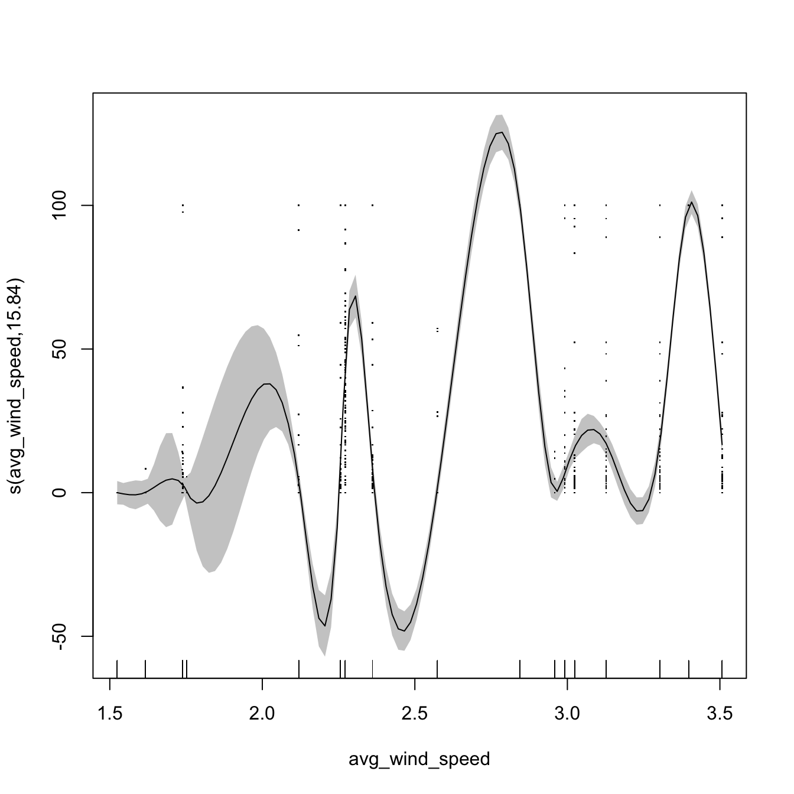
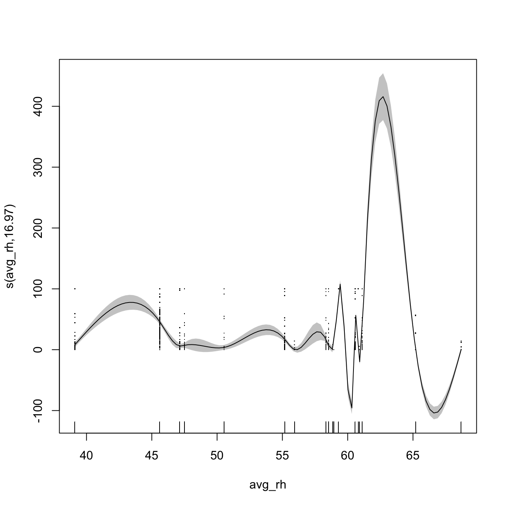

Fit GAMs to Ascocyta blight spatiotemporal development data
Ihsan Khaliq
2021-03-13
Spatiotemporal_development_GAMs.RmdLoad libraries
library("readxl")
library("mgcv")
library("broom")
library("ggpubr")
library("tidyverse")
library("lubridate")
library("spatiotemporaldynamics")
library("SDMTools")Import data
Disease spread data
Import disease data.
### import spatiotemporal spread data
dat <-
read_excel(
system.file("extdata", "SpatioTemporalSpreadData.xlsx",
package = "spatiotemporaldynamics"),
sheet = 1,
na = "NA"
)
summary(dat)## location assessment_date assessment_number
## Length:1800 Min. :2020-07-02 00:00:00 Min. : 1.000
## Class :character 1st Qu.:2020-08-13 00:00:00 1st Qu.: 3.000
## Mode :character Median :2020-09-10 00:00:00 Median : 5.000
## Mean :2020-09-08 21:20:00 Mean : 5.056
## 3rd Qu.:2020-10-09 00:00:00 3rd Qu.: 7.000
## Max. :2020-11-05 00:00:00 Max. :10.000
## plot_number distance quadrat direction
## Min. :1.00 Min. :0.00 Length:1800 Length:1800
## 1st Qu.:1.75 1st Qu.:3.00 Class :character Class :character
## Median :2.50 Median :6.00 Mode :character Mode :character
## Mean :2.50 Mean :5.76
## 3rd Qu.:3.25 3rd Qu.:9.00
## Max. :4.00 Max. :9.00
## infected_plants total_plants incidence min_temp
## Min. : 0.000 Min. :16.00 Min. : 0.00 Min. : 2.943
## 1st Qu.: 0.000 1st Qu.:36.00 1st Qu.: 0.00 1st Qu.: 4.421
## Median : 0.000 Median :44.00 Median : 0.00 Median : 7.633
## Mean : 8.672 Mean :43.53 Mean : 19.30 Mean : 8.052
## 3rd Qu.: 4.000 3rd Qu.:51.00 3rd Qu.: 11.51 3rd Qu.:11.350
## Max. :74.000 Max. :74.00 Max. :100.00 Max. :15.580
## max_temp avg_temp avg_wind_speed total_rain
## Min. :18.19 Min. :10.57 Min. :1.524 Min. : 0.00
## 1st Qu.:19.98 1st Qu.:12.16 1st Qu.:1.752 1st Qu.: 1.00
## Median :25.81 Median :16.72 Median :2.468 Median : 4.80
## Mean :24.13 Mean :16.09 Mean :2.506 Mean :12.16
## 3rd Qu.:27.47 3rd Qu.:19.35 3rd Qu.:3.024 3rd Qu.:20.80
## Max. :29.24 Max. :21.71 Max. :3.507 Max. :57.40
## min_rh max_rh avg_rh
## Min. :14.57 Min. :63.64 Min. :39.11
## 1st Qu.:25.69 1st Qu.:75.38 1st Qu.:50.54
## Median :34.60 Median :81.25 Median :58.70
## Mean :31.88 Mean :80.59 Mean :56.23
## 3rd Qu.:36.92 3rd Qu.:85.93 3rd Qu.:60.81
## Max. :47.56 Max. :89.81 Max. :68.69Daily average wind direction data
wind <-
read_excel(
system.file("extdata", "DailyWindDirectionData.xlsx",
package = "spatiotemporaldynamics"),
sheet = 1
)
summary(wind)## date location assessment_number
## Length:247 Length:247 Min. : 1.000
## Class :character Class :character 1st Qu.: 3.000
## Mode :character Mode :character Median : 5.000
## Mean : 4.798
## 3rd Qu.: 7.000
## Max. :10.000
## daily_avg_wind_direction
## Length:247
## Class :character
## Mode :character
##
##
## Convert text to degrees
Wind direction for the Billa Billa site is the character format recorded as the text value of the wind direction. We need to convert it to degrees for calculations and then calculate the fortnightly average wind direction for use in the GAMs.
wind <-
wind %>%
mutate(wind_degrees = as.numeric(
case_when(
daily_avg_wind_direction == "N" ~ "0",
daily_avg_wind_direction == "NbE" ~ "11.25",
daily_avg_wind_direction == "NNE" ~ "22.5",
daily_avg_wind_direction == "NEbN" ~ "33.75",
daily_avg_wind_direction == "NE" ~ "45",
daily_avg_wind_direction == "NEbE" ~ "56.25",
daily_avg_wind_direction == "ENE" ~ "67.5",
daily_avg_wind_direction == "EbN" ~ "73.5",
daily_avg_wind_direction == "E" ~ "90",
daily_avg_wind_direction == "EbS" ~ "101.2",
daily_avg_wind_direction == "ESE" ~ "112.5",
daily_avg_wind_direction == "SEbE" ~ "123.8",
daily_avg_wind_direction == "SE" ~ "135.1",
daily_avg_wind_direction == "SEbS" ~ "146.3",
daily_avg_wind_direction == "SSE" ~ "157.6",
daily_avg_wind_direction == "SbE" ~ "168.8",
daily_avg_wind_direction == "S" ~ "180",
daily_avg_wind_direction == "SbW" ~ "191.2",
daily_avg_wind_direction == "SSW" ~ "202.5",
daily_avg_wind_direction == "SWbS" ~ "213.8",
daily_avg_wind_direction == "SW" ~ "225",
daily_avg_wind_direction == "SWbW" ~ "236.2",
daily_avg_wind_direction == "WSW" ~ "247.5",
daily_avg_wind_direction == "WbS" ~ "258.8",
daily_avg_wind_direction == "W" ~ "270",
daily_avg_wind_direction == "WbN" ~ "281.2",
daily_avg_wind_direction == "WNW" ~ "292.5",
daily_avg_wind_direction == "NWbW" ~ "303.8",
daily_avg_wind_direction == "NW" ~ "315",
daily_avg_wind_direction == "NWbN" ~ "326.2",
daily_avg_wind_direction == "NNW" ~ "337.5",
daily_avg_wind_direction == "NbW" ~ "348.8",
TRUE ~ daily_avg_wind_direction
)
)) %>%
group_by(location, assessment_number) %>%
summarise(wind_direction = circular.averaging(wind_degrees))## `summarise()` has grouped output by 'location'. You can override using the `.groups` argument.Join the data sources
Left-join the wind and disease data for analysis in the GAMs.
Combine quadrat direction and location column to determine whether quadrats located in particular direction has significantly faster disease progress rates
dat <-
unite(dat, direc_loc, c(location, direction), remove = FALSE) Examine data
str(dat)## tibble [1,800 × 20] (S3: tbl_df/tbl/data.frame)
## $ direc_loc : chr [1:1800] "Billa Billa_NA" "Billa Billa_North" "Billa Billa_NorthEast" "Billa Billa_East" ...
## $ location : chr [1:1800] "Billa Billa" "Billa Billa" "Billa Billa" "Billa Billa" ...
## $ assessment_date : POSIXct[1:1800], format: "2020-07-02" "2020-07-02" ...
## $ assessment_number: num [1:1800] 1 1 1 1 1 1 1 1 1 1 ...
## $ plot_number : num [1:1800] 1 1 1 1 1 1 1 1 1 1 ...
## $ distance : num [1:1800] 0 9 9 9 9 9 9 9 9 6 ...
## $ quadrat : chr [1:1800] "F" "N9" "NE9" "E9" ...
## $ direction : chr [1:1800] NA "North" "NorthEast" "East" ...
## $ infected_plants : num [1:1800] 0 0 0 0 0 0 0 0 0 0 ...
## $ total_plants : num [1:1800] 36 48 27 57 53 41 39 31 36 54 ...
## $ incidence : num [1:1800] 0 0 0 0 0 0 0 0 0 0 ...
## $ min_temp : num [1:1800] 3.99 3.99 3.99 3.99 3.99 ...
## $ max_temp : num [1:1800] 20 20 20 20 20 ...
## $ avg_temp : num [1:1800] 12 12 12 12 12 ...
## $ avg_wind_speed : num [1:1800] 1.52 1.52 1.52 1.52 1.52 ...
## $ total_rain : num [1:1800] 1 1 1 1 1 1 1 1 1 1 ...
## $ min_rh : num [1:1800] 35.2 35.2 35.2 35.2 35.2 ...
## $ max_rh : num [1:1800] 82.7 82.7 82.7 82.7 82.7 ...
## $ avg_rh : num [1:1800] 58.9 58.9 58.9 58.9 58.9 ...
## $ wind_direction : num [1:1800] 88.5 88.5 88.5 88.5 88.5 ...Re-check class
sapply(dat, class)## $direc_loc
## [1] "factor"
##
## $location
## [1] "factor"
##
## $assessment_date
## [1] "POSIXct" "POSIXt"
##
## $assessment_number
## [1] "numeric"
##
## $plot_number
## [1] "numeric"
##
## $distance
## [1] "numeric"
##
## $quadrat
## [1] "factor"
##
## $direction
## [1] "factor"
##
## $infected_plants
## [1] "numeric"
##
## $total_plants
## [1] "numeric"
##
## $incidence
## [1] "numeric"
##
## $min_temp
## [1] "numeric"
##
## $max_temp
## [1] "numeric"
##
## $avg_temp
## [1] "numeric"
##
## $avg_wind_speed
## [1] "numeric"
##
## $total_rain
## [1] "numeric"
##
## $min_rh
## [1] "numeric"
##
## $max_rh
## [1] "numeric"
##
## $avg_rh
## [1] "numeric"
##
## $wind_direction
## [1] "numeric"Fit univariate GAMs
Use set.seed() for reproducibility purposes.
set.seed(42)Model_1 s(distance)
##
## Family: gaussian
## Link function: identity
##
## Formula:
## incidence ~ s(distance, k = 4)
##
## Parametric coefficients:
## Estimate Std. Error t value Pr(>|t|)
## (Intercept) 19.3025 0.8242 23.42 <2e-16 ***
## ---
## Signif. codes: 0 '***' 0.001 '**' 0.01 '*' 0.05 '.' 0.1 ' ' 1
##
## Approximate significance of smooth terms:
## edf Ref.df F p-value
## s(distance) 2.935 2.997 55.02 <2e-16 ***
## ---
## Signif. codes: 0 '***' 0.001 '**' 0.01 '*' 0.05 '.' 0.1 ' ' 1
##
## R-sq.(adj) = 0.0849 Deviance explained = 8.64%
## -REML = 8953.3 Scale est. = 1222.8 n = 1800
plot(
model_1,
pages = 1,
residuals = TRUE,
shade = TRUE,
seWithMean = TRUE,
shift = coef(model_1)[1]
)
Model_2 s(total_rain)
##
## Family: gaussian
## Link function: identity
##
## Formula:
## incidence ~ s(total_rain, k = 16)
##
## Parametric coefficients:
## Estimate Std. Error t value Pr(>|t|)
## (Intercept) 19.3025 0.4788 40.31 <2e-16 ***
## ---
## Signif. codes: 0 '***' 0.001 '**' 0.01 '*' 0.05 '.' 0.1 ' ' 1
##
## Approximate significance of smooth terms:
## edf Ref.df F p-value
## s(total_rain) 14.35 14.8 272 <2e-16 ***
## ---
## Signif. codes: 0 '***' 0.001 '**' 0.01 '*' 0.05 '.' 0.1 ' ' 1
##
## R-sq.(adj) = 0.691 Deviance explained = 69.4%
## -REML = 8023.9 Scale est. = 412.71 n = 1800
plot(
model_2,
residuals = TRUE,
pages = 1,
shade = TRUE,
seWithMean = TRUE,
shift = coef(model_2)[1]
)
Model_3 assessment_number
##
## Family: gaussian
## Link function: identity
##
## Formula:
## incidence ~ assessment_number
##
## Parametric coefficients:
## Estimate Std. Error t value Pr(>|t|)
## (Intercept) -20.8905 1.4975 -13.95 <2e-16 ***
## assessment_number 7.9503 0.2618 30.37 <2e-16 ***
## ---
## Signif. codes: 0 '***' 0.001 '**' 0.01 '*' 0.05 '.' 0.1 ' ' 1
##
##
## R-sq.(adj) = 0.339 Deviance explained = 33.9%
## -REML = 8658.6 Scale est. = 883.65 n = 1800Model_4 s(avg_wind_speed)
##
## Family: gaussian
## Link function: identity
##
## Formula:
## incidence ~ s(avg_wind_speed, k = 18)
##
## Parametric coefficients:
## Estimate Std. Error t value Pr(>|t|)
## (Intercept) 19.3025 0.4772 40.45 <2e-16 ***
## ---
## Signif. codes: 0 '***' 0.001 '**' 0.01 '*' 0.05 '.' 0.1 ' ' 1
##
## Approximate significance of smooth terms:
## edf Ref.df F p-value
## s(avg_wind_speed) 15.84 16.01 253.9 <2e-16 ***
## ---
## Signif. codes: 0 '***' 0.001 '**' 0.01 '*' 0.05 '.' 0.1 ' ' 1
##
## R-sq.(adj) = 0.693 Deviance explained = 69.6%
## -REML = 8025.1 Scale est. = 409.95 n = 1800
plot(
model_4,
residuals = TRUE,
pages = 1,
shade = TRUE,
seWithMean = TRUE,
shift = coef(model_4)[1]
)
Model_5 s(avg_rh)
##
## Family: gaussian
## Link function: identity
##
## Formula:
## incidence ~ s(avg_rh, k = 18)
##
## Parametric coefficients:
## Estimate Std. Error t value Pr(>|t|)
## (Intercept) 19.3025 0.4767 40.49 <2e-16 ***
## ---
## Signif. codes: 0 '***' 0.001 '**' 0.01 '*' 0.05 '.' 0.1 ' ' 1
##
## Approximate significance of smooth terms:
## edf Ref.df F p-value
## s(avg_rh) 16.97 17 239.8 <2e-16 ***
## ---
## Signif. codes: 0 '***' 0.001 '**' 0.01 '*' 0.05 '.' 0.1 ' ' 1
##
## R-sq.(adj) = 0.694 Deviance explained = 69.7%
## -REML = 8059.5 Scale est. = 409.08 n = 1800
plot(model_5,
residuals = TRUE,
pages = 1,
shade = TRUE,
seWithMean = TRUE,
shift = coef(model_5)[1])
Model_6 s(avg _temp)
##
## Family: gaussian
## Link function: identity
##
## Formula:
## incidence ~ s(avg_temp, k = 18)
##
## Parametric coefficients:
## Estimate Std. Error t value Pr(>|t|)
## (Intercept) 19.3025 0.4773 40.44 <2e-16 ***
## ---
## Signif. codes: 0 '***' 0.001 '**' 0.01 '*' 0.05 '.' 0.1 ' ' 1
##
## Approximate significance of smooth terms:
## edf Ref.df F p-value
## s(avg_temp) 12.88 14.32 283.9 <2e-16 ***
## ---
## Signif. codes: 0 '***' 0.001 '**' 0.01 '*' 0.05 '.' 0.1 ' ' 1
##
## R-sq.(adj) = 0.693 Deviance explained = 69.5%
## -REML = 7993.9 Scale est. = 410.08 n = 1800
plot(
model_6,
residuals = TRUE,
pages = 1,
shade = TRUE,
seWithMean = TRUE,
shift = coef(model_6)[1]
)
Model_6.1 s(avg _temp, by = location)
model_6.1 <-
gam(incidence ~ s(avg_temp, by = location, k = 18),
data = dat,
method = "REML")
summary(model_6.1)##
## Family: gaussian
## Link function: identity
##
## Formula:
## incidence ~ s(avg_temp, by = location, k = 18)
##
## Parametric coefficients:
## Estimate Std. Error t value Pr(>|t|)
## (Intercept) 16.6065 0.8576 19.36 <2e-16 ***
## ---
## Signif. codes: 0 '***' 0.001 '**' 0.01 '*' 0.05 '.' 0.1 ' ' 1
##
## Approximate significance of smooth terms:
## edf Ref.df F p-value
## s(avg_temp):locationBilla Billa 6.230 6.748 336.7 <2e-16 ***
## s(avg_temp):locationTosari 7.725 7.933 227.8 <2e-16 ***
## ---
## Signif. codes: 0 '***' 0.001 '**' 0.01 '*' 0.05 '.' 0.1 ' ' 1
##
## R-sq.(adj) = 0.694 Deviance explained = 69.6%
## -REML = 7993.1 Scale est. = 409.34 n = 1800
plot(
model_6.1,
residuals = TRUE,
pages = 1,
shade = TRUE,
seWithMean = TRUE,
shift = coef(model_6.1)[1]
)
Model_7 location
##
## Family: gaussian
## Link function: identity
##
## Formula:
## incidence ~ location
##
## Parametric coefficients:
## Estimate Std. Error t value Pr(>|t|)
## (Intercept) 17.149 1.154 14.86 < 2e-16 ***
## locationTosari 4.845 1.731 2.80 0.00517 **
## ---
## Signif. codes: 0 '***' 0.001 '**' 0.01 '*' 0.05 '.' 0.1 ' ' 1
##
##
## R-sq.(adj) = 0.00379 Deviance explained = 0.434%
## -REML = 9025.3 Scale est. = 1331.1 n = 1800
plot(
model_7,
residuals = TRUE,
all.terms = TRUE,
pages = 1,
shade = TRUE,
seWithMean = TRUE,
shift = coef(model_7)[1]
)
Fit multivariate GAMs
Model_8 (All variables)
model_8 <-
gam(
incidence ~ s(total_rain, k = 16) +
s(distance, k = 4) +
s(avg_wind_speed, k = 18) +
s(avg_rh, k = 18) +
s(avg_temp, k = 18) +
s(wind_direction, k = 18) +
location +
assessment_number +
direc_loc,
data = dat,
method = "REML"
)
summary(model_8)##
## Family: gaussian
## Link function: identity
##
## Formula:
## incidence ~ s(total_rain, k = 16) + s(distance, k = 4) + s(avg_wind_speed,
## k = 18) + s(avg_rh, k = 18) + s(avg_temp, k = 18) + s(wind_direction,
## k = 18) + location + assessment_number + direc_loc
##
## Parametric coefficients:
## Estimate Std. Error t value Pr(>|t|)
## (Intercept) 22.32170 7.64443 2.920 0.003545 **
## locationTosari 42.70768 11.14394 3.832 0.000131 ***
## assessment_number -0.26314 1.31955 -0.199 0.841960
## direc_locBilla Billa_NA 26.79045 6.71250 3.991 6.85e-05 ***
## direc_locBilla Billa_North -0.03499 2.09500 -0.017 0.986677
## direc_locBilla Billa_NorthEast -1.87407 2.09500 -0.895 0.371153
## direc_locBilla Billa_NorthWest -1.70319 2.09500 -0.813 0.416341
## direc_locBilla Billa_South -3.55843 2.09500 -1.699 0.089582 .
## direc_locBilla Billa_SouthEast -4.99762 2.09500 -2.386 0.017161 *
## direc_locBilla Billa_SouthWest -2.96581 2.09500 -1.416 0.157050
## direc_locBilla Billa_West -0.62089 2.09500 -0.296 0.766983
## direc_locTosari_East -37.65387 6.87402 -5.478 4.93e-08 ***
## direc_locTosari_NA 0.00000 0.00000 NA NA
## direc_locTosari_North -46.39455 6.87402 -6.749 2.01e-11 ***
## direc_locTosari_NorthEast -31.54814 6.87402 -4.589 4.76e-06 ***
## direc_locTosari_NorthWest -53.00054 6.87402 -7.710 2.08e-14 ***
## direc_locTosari_South -54.03683 6.87402 -7.861 6.57e-15 ***
## direc_locTosari_SouthEast -49.71251 6.87402 -7.232 7.06e-13 ***
## direc_locTosari_SouthWest -53.05491 6.87402 -7.718 1.96e-14 ***
## direc_locTosari_West -53.63160 6.87402 -7.802 1.03e-14 ***
## ---
## Signif. codes: 0 '***' 0.001 '**' 0.01 '*' 0.05 '.' 0.1 ' ' 1
##
## Approximate significance of smooth terms:
## edf Ref.df F p-value
## s(total_rain) 2.002 2.073 2.667 0.0391 *
## s(distance) 1.928 1.995 32.584 <2e-16 ***
## s(avg_wind_speed) 1.001 1.001 2.753 0.0972 .
## s(avg_rh) 2.220 2.429 1.368 0.2038
## s(avg_temp) 7.461 8.078 26.781 <2e-16 ***
## s(wind_direction) 1.002 1.003 0.074 0.7862
## ---
## Signif. codes: 0 '***' 0.001 '**' 0.01 '*' 0.05 '.' 0.1 ' ' 1
##
## Rank: 105/106
## R-sq.(adj) = 0.803 Deviance explained = 80.7%
## -REML = 7542.9 Scale est. = 263.34 n = 1800
Model_9 (Fit different smooths for each term by location)
Same as model_8 but different smooths have been considered for each term BY LOCATION
model_9 <-
gam(
incidence ~ s(total_rain, k = 16, by = location) +
s(distance, k = 4, by = location) +
s(avg_wind_speed, k = 18, by = location) +
s(avg_temp, k = 18, by = location) +
s(avg_rh, k = 18, by = location) +
s(wind_direction, k = 18, by = location) +
assessment_number +
location +
direc_loc,
data = dat,
method = "REML"
)
summary(model_9)##
## Family: gaussian
## Link function: identity
##
## Formula:
## incidence ~ s(total_rain, k = 16, by = location) + s(distance,
## k = 4, by = location) + s(avg_wind_speed, k = 18, by = location) +
## s(avg_temp, k = 18, by = location) + s(avg_rh, k = 18, by = location) +
## s(wind_direction, k = 18, by = location) + assessment_number +
## location + direc_loc
##
## Parametric coefficients:
## Estimate Std. Error t value Pr(>|t|)
## (Intercept) 49.05050 17.09310 2.870 0.00416 **
## assessment_number -0.91643 1.44301 -0.635 0.52546
## locationTosari -35.83871 17.12081 -2.093 0.03647 *
## direc_locBilla Billa_NA 38.04013 3.17234 11.991 < 2e-16 ***
## direc_locBilla Billa_North -0.03499 2.05816 -0.017 0.98644
## direc_locBilla Billa_NorthEast -1.87407 2.05816 -0.911 0.36265
## direc_locBilla Billa_NorthWest -1.70319 2.05816 -0.828 0.40805
## direc_locBilla Billa_South -3.55843 2.05816 -1.729 0.08400 .
## direc_locBilla Billa_SouthEast -4.99762 2.05816 -2.428 0.01527 *
## direc_locBilla Billa_SouthWest -2.96581 2.05816 -1.441 0.14976
## direc_locBilla Billa_West -0.62089 2.05816 -0.302 0.76294
## direc_locTosari_East 15.40105 2.30109 6.693 2.93e-11 ***
## direc_locTosari_NA 39.23797 13.13431 2.987 0.00285 **
## direc_locTosari_North 6.66037 2.30109 2.894 0.00385 **
## direc_locTosari_NorthEast 21.50677 2.30109 9.346 < 2e-16 ***
## direc_locTosari_NorthWest 0.05438 2.30109 0.024 0.98115
## direc_locTosari_South -0.98191 2.30109 -0.427 0.66964
## direc_locTosari_SouthEast 3.34241 2.30109 1.453 0.14653
## direc_locTosari_SouthWest 0.00000 0.00000 NA NA
## direc_locTosari_West -0.57669 2.30109 -0.251 0.80214
## ---
## Signif. codes: 0 '***' 0.001 '**' 0.01 '*' 0.05 '.' 0.1 ' ' 1
##
## Approximate significance of smooth terms:
## edf Ref.df F p-value
## s(total_rain):locationBilla Billa 3.886 4.023 11.335 < 2e-16 ***
## s(total_rain):locationTosari 2.108 2.160 5.584 0.00163 **
## s(distance):locationBilla Billa 1.000 1.001 5.365 0.02062 *
## s(distance):locationTosari 1.965 1.999 46.325 < 2e-16 ***
## s(avg_wind_speed):locationBilla Billa 1.001 1.001 7.741 0.00541 **
## s(avg_wind_speed):locationTosari 1.628 1.747 1.129 0.42354
## s(avg_temp):locationBilla Billa 1.007 1.008 24.732 1.28e-06 ***
## s(avg_temp):locationTosari 1.000 1.000 2.755 0.09703 .
## s(avg_rh):locationBilla Billa 1.000 1.000 8.649 0.00333 **
## s(avg_rh):locationTosari 1.002 1.002 0.107 0.74438
## s(wind_direction):locationBilla Billa 1.000 1.000 45.549 < 2e-16 ***
## s(wind_direction):locationTosari 1.001 1.001 2.259 0.13343
## ---
## Signif. codes: 0 '***' 0.001 '**' 0.01 '*' 0.05 '.' 0.1 ' ' 1
##
## Rank: 191/192
## R-sq.(adj) = 0.81 Deviance explained = 81.4%
## -REML = 7492.8 Scale est. = 254.16 n = 1800
Model_10
Same as model_8 but relative humidity, wind speed and wind direction removed, as they were not significant.
model_10 <-
gam(
incidence ~ s(total_rain, k = 16) +
s(distance, k = 4) +
s(avg_wind_speed, k = 18) +
location +
assessment_number +
direc_loc,
data = dat,
method = "REML"
)
summary(model_10)##
## Family: gaussian
## Link function: identity
##
## Formula:
## incidence ~ s(total_rain, k = 16) + s(distance, k = 4) + s(avg_wind_speed,
## k = 18) + location + assessment_number + direc_loc
##
## Parametric coefficients:
## Estimate Std. Error t value Pr(>|t|)
## (Intercept) 60.72721 17.10564 3.550 0.000395 ***
## locationTosari 0.00000 0.00000 NA NA
## assessment_number 1.80518 1.31875 1.369 0.171218
## direc_locBilla Billa_NA 26.79070 6.71292 3.991 6.85e-05 ***
## direc_locBilla Billa_North -0.03499 2.09565 -0.017 0.986681
## direc_locBilla Billa_NorthEast -1.87407 2.09565 -0.894 0.371301
## direc_locBilla Billa_NorthWest -1.70319 2.09565 -0.813 0.416485
## direc_locBilla Billa_South -3.55843 2.09565 -1.698 0.089682 .
## direc_locBilla Billa_SouthEast -4.99762 2.09565 -2.385 0.017195 *
## direc_locBilla Billa_SouthWest -2.96581 2.09565 -1.415 0.157179
## direc_locBilla Billa_West -0.62089 2.09565 -0.296 0.767053
## direc_locTosari_East -104.88575 28.87319 -3.633 0.000289 ***
## direc_locTosari_NA -67.23163 29.58768 -2.272 0.023189 *
## direc_locTosari_North -113.62643 28.87319 -3.935 8.63e-05 ***
## direc_locTosari_NorthEast -98.78002 28.87319 -3.421 0.000638 ***
## direc_locTosari_NorthWest -120.23242 28.87319 -4.164 3.28e-05 ***
## direc_locTosari_South -121.26871 28.87319 -4.200 2.80e-05 ***
## direc_locTosari_SouthEast -116.94439 28.87319 -4.050 5.34e-05 ***
## direc_locTosari_SouthWest -120.28680 28.87319 -4.166 3.25e-05 ***
## direc_locTosari_West -120.86348 28.87319 -4.186 2.98e-05 ***
## ---
## Signif. codes: 0 '***' 0.001 '**' 0.01 '*' 0.05 '.' 0.1 ' ' 1
##
## Approximate significance of smooth terms:
## edf Ref.df F p-value
## s(total_rain) 3.432 3.526 22.07 <2e-16 ***
## s(distance) 1.928 1.995 32.57 <2e-16 ***
## s(avg_wind_speed) 11.277 11.437 76.70 <2e-16 ***
## ---
## Signif. codes: 0 '***' 0.001 '**' 0.01 '*' 0.05 '.' 0.1 ' ' 1
##
## Rank: 54/55
## R-sq.(adj) = 0.803 Deviance explained = 80.7%
## -REML = 7573.6 Scale est. = 263.5 n = 1800
Compare the models
AIC, BIC
models <- list(
model_1 = model_1,
model_2 = model_2,
model_3 = model_3,
model_4 = model_4,
model_5 = model_5,
model_6 = model_6,
model_6.1 = model_6.1,
model_7 = model_7,
model_8 = model_8,
model_9 = model_9,
model_10 = model_10
)
map_df(models, glance, .id = "model") %>%
arrange(AIC)## # A tibble: 11 x 8
## model df logLik AIC BIC deviance df.residual nobs
## <chr> <dbl> <dbl> <dbl> <dbl> <dbl> <dbl> <int>
## 1 model_9 36.6 -7520. 15115. 15324. 448189. 1763. 1800
## 2 model_8 34.6 -7553. 15178. 15379. 464898. 1765. 1800
## 3 model_10 35.6 -7553. 15179. 15383. 464917. 1764. 1800
## 4 model_6.1 15.0 -7960. 15953. 16044. 730695. 1785. 1800
## 5 model_5 18.0 -7958. 15953. 16058. 728998. 1782. 1800
## 6 model_6 13.9 -7962. 15955. 16040. 732449. 1786. 1800
## 7 model_4 16.8 -7960. 15956. 16055. 731007. 1783. 1800
## 8 model_2 15.4 -7967. 15967. 16057. 736538. 1785. 1800
## 9 model_3 2. -8659. 17323. 17340. 1588802. 1798 1800
## 10 model_1 3.94 -8950. 17910. 17938. 2196139. 1796. 1800
## 11 model_7 2.00 -9027. 18061. 18077. 2393383. 1798 1800R2
enframe(
c(
model_1 = summary(model_1)$r.sq,
model_2 = summary(model_2)$r.sq,
model_3 = summary(model_3)$r.sq,
model_4 = summary(model_4)$r.sq,
model_5 = summary(model_5)$r.sq,
model_6 = summary(model_6)$r.sq,
model_6.1 = summary(model_6.1)$r.sq,
model_7 = summary(model_7)$r.sq,
model_8 = summary(model_8)$r.sq,
model_9 = summary(model_9)$r.sq,
model_10 = summary(model_10)$r.sq
)
) %>%
arrange(desc(value))## # A tibble: 11 x 2
## name value
## <chr> <dbl>
## 1 model_9 0.810
## 2 model_8 0.803
## 3 model_10 0.803
## 4 model_5 0.694
## 5 model_6.1 0.694
## 6 model_4 0.693
## 7 model_6 0.693
## 8 model_2 0.691
## 9 model_3 0.339
## 10 model_1 0.0849
## 11 model_7 0.00379ANOVA
anova(
model_1,
model_2,
model_3,
model_4,
model_5,
model_6,
model_6.1,
model_7,
model_8,
model_9,
model_10
)## Analysis of Deviance Table
##
## Model 1: incidence ~ s(distance, k = 4)
## Model 2: incidence ~ s(total_rain, k = 16)
## Model 3: incidence ~ assessment_number
## Model 4: incidence ~ s(avg_wind_speed, k = 18)
## Model 5: incidence ~ s(avg_rh, k = 18)
## Model 6: incidence ~ s(avg_temp, k = 18)
## Model 7: incidence ~ s(avg_temp, by = location, k = 18)
## Model 8: incidence ~ location
## Model 9: incidence ~ s(total_rain, k = 16) + s(distance, k = 4) + s(avg_wind_speed,
## k = 18) + s(avg_rh, k = 18) + s(avg_temp, k = 18) + s(wind_direction,
## k = 18) + location + assessment_number + direc_loc
## Model 10: incidence ~ s(total_rain, k = 16, by = location) + s(distance,
## k = 4, by = location) + s(avg_wind_speed, k = 18, by = location) +
## s(avg_temp, k = 18, by = location) + s(avg_rh, k = 18, by = location) +
## s(wind_direction, k = 18, by = location) + assessment_number +
## location + direc_loc
## Model 11: incidence ~ s(total_rain, k = 16) + s(distance, k = 4) + s(avg_wind_speed,
## k = 18) + location + assessment_number + direc_loc
## Resid. Df Resid. Dev Df Deviance
## 1 1795.9 2196139
## 2 1784.1 736538 11.83242 1459601
## 3 1798.0 1588802 -13.89117 -852264
## 4 1782.9 731007 15.12409 857795
## 5 1782.0 728998 0.90043 2009
## 6 1784.0 732449 -2.06305 -3451
## 7 1783.7 730695 0.36208 1754
## 8 1798.0 2393383 -14.32355 -1662688
## 9 1763.6 464898 34.39794 1928485
## 10 1762.7 448189 0.88981 16709
## 11 1763.7 464917 -1.00937 -16728
Perform checks on the best fitting model_9
gam.check and concurvity
gam.check(model_9)##
## Method: REML Optimizer: outer newton
## full convergence after 25 iterations.
## Gradient range [-0.001626647,0.002281697]
## (score 7492.787 & scale 254.1614).
## eigenvalue range [-0.0005516927,884.0008].
## Model rank = 191 / 192
##
## Basis dimension (k) checking results. Low p-value (k-index<1) may
## indicate that k is too low, especially if edf is close to k'.
##
## k' edf k-index p-value
## s(total_rain):locationBilla Billa 15.00 3.89 0.71 <2e-16 ***
## s(total_rain):locationTosari 15.00 2.11 0.71 <2e-16 ***
## s(distance):locationBilla Billa 3.00 1.00 0.45 <2e-16 ***
## s(distance):locationTosari 3.00 1.97 0.45 <2e-16 ***
## s(avg_wind_speed):locationBilla Billa 17.00 1.00 0.71 <2e-16 ***
## s(avg_wind_speed):locationTosari 17.00 1.63 0.71 <2e-16 ***
## s(avg_temp):locationBilla Billa 17.00 1.01 0.72 <2e-16 ***
## s(avg_temp):locationTosari 17.00 1.00 0.72 <2e-16 ***
## s(avg_rh):locationBilla Billa 17.00 1.00 0.71 <2e-16 ***
## s(avg_rh):locationTosari 17.00 1.00 0.71 <2e-16 ***
## s(wind_direction):locationBilla Billa 17.00 1.00 0.71 <2e-16 ***
## s(wind_direction):locationTosari 17.00 1.00 0.71 <2e-16 ***
## ---
## Signif. codes: 0 '***' 0.001 '**' 0.01 '*' 0.05 '.' 0.1 ' ' 1Comments on the model check
The model has been fully converged, which indicates that there is no issue of too many variables for not enough data. However, the model fit could have been much better if we had enough basis function for predictors showing significant result in the diagnostic function, the low p value means residuals are not randomly distributed).
concurvity(model_9, full=TRUE)## para s(total_rain):locationBilla Billa s(total_rain):locationTosari
## worst 1 1.186368 1.364428
## observed 1 1.000000 1.000000
## estimate 1 1.000000 1.000000
## s(distance):locationBilla Billa s(distance):locationTosari
## worst 1.0000000 1.0000000
## observed 0.2252989 0.3690643
## estimate 0.2326567 0.2027466
## s(avg_wind_speed):locationBilla Billa s(avg_wind_speed):locationTosari
## worst 1.687242 1.492719
## observed 1.000000 1.000000
## estimate 1.000000 1.000000
## s(avg_temp):locationBilla Billa s(avg_temp):locationTosari
## worst 1.180916 1.430179
## observed 1.000000 1.000000
## estimate 1.000000 1.000000
## s(avg_rh):locationBilla Billa s(avg_rh):locationTosari
## worst 1.226327 2.456714
## observed 1.000000 1.000000
## estimate 1.000000 1.000000
## s(wind_direction):locationBilla Billa s(wind_direction):locationTosari
## worst 1.092539 1.159971
## observed 1.000000 1.000000
## estimate 1.000000 1.000000
Comments on model_9
Fitting different smooths for each term by location in
model_9improved the adjusted R^2 and percent deviance explained values. Noam Ross encourages this practice in his own words,